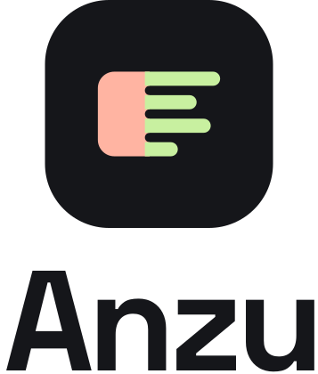
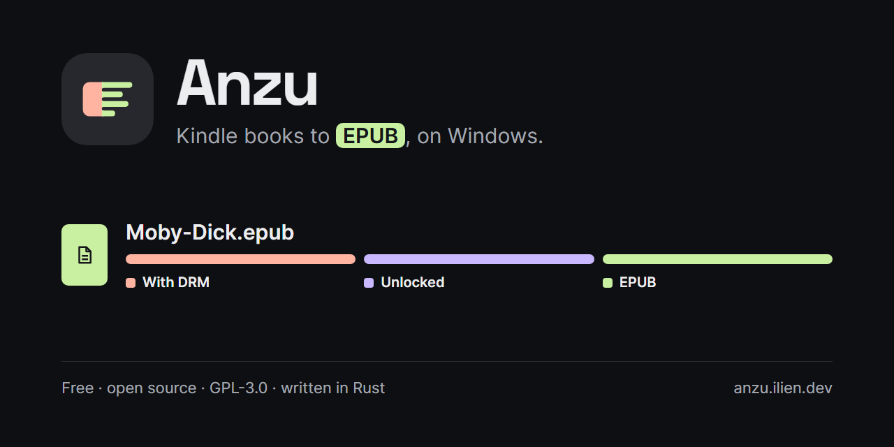
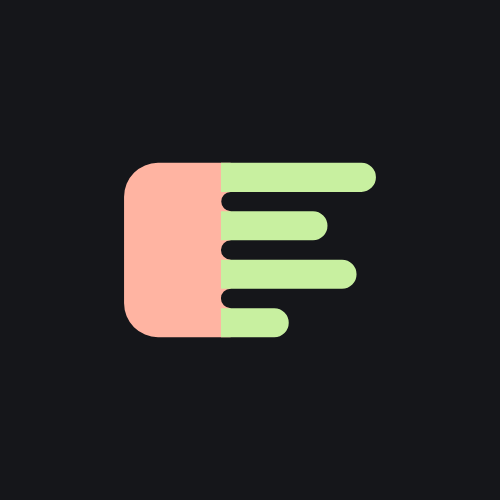
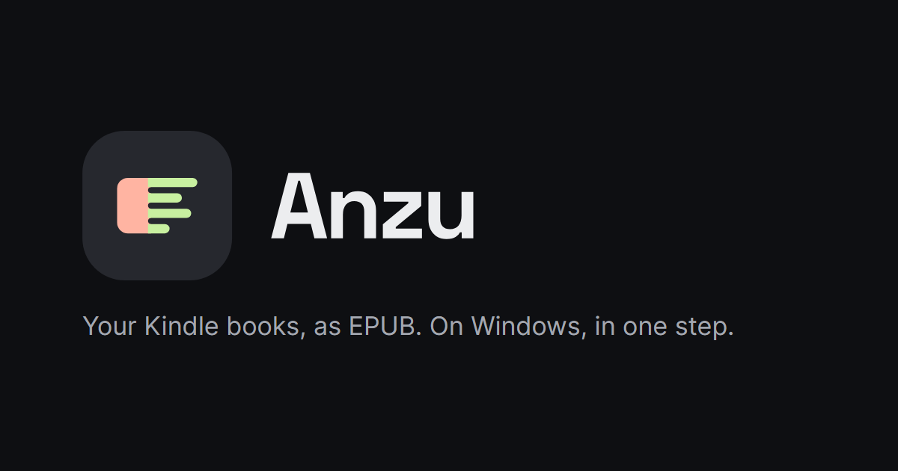

Your Kindle books, as EPUB.
Simple, graphic, from point A to point B in one step.
Anzu turns the books downloaded with the Kindle app into EPUB files, with no Calibre and no command line. For people who buy on Kindle and want to read elsewhere, often not technical.
Simple · Graphic · Direct · One step · Dependable
Padlocks, keys, broken chains: Anzu shows the trip, never the break. Open books, Kindle devices, two files with an arrow.
Change the logo only. The app's visual line stays as it is: ink and light, the four state pastels, Space Grotesk over Inter, soft corners.
A solid block that turns into lines of text as it moves right.
A Kindle book is a block nobody else can open; an EPUB is text that flows. The symbol is the moment one becomes the other, and Anzu does it in one step.
— Peach is the colour the app gives a book with DRM; mint, a book in EPUB.
— Construction on a 64 grid: block 22 wide with 7-unit corners; four lines 6 high, 4 apart, ending at 58, 48, 54 and 40 like a ragged page.
— The gaps start inside the block with a round end, so the lines grow out of it.
For tiles of 32 px and below (the symbol under 22 px): three thicker lines and wider gaps. The app picks it by itself.
The block · with DRM
The lines · EPUB
The tile, text on light
The tile on dark
Dark grounds
Light grounds
Contrast: peach on ink 10.6:1 · mint on ink 14.1:1 · peach on chip 8.6:1 · mint on chip 11.5:1 · ink on paper 16.6:1. Peach and mint on paper are 1.6:1 and 1.2:1: on light grounds the symbol always keeps its tile. Lilac #C9B8FF and butter #FFF27A stay in the app, outside the logo.
The name and headings, as in the app
Interface and documents
Paths and codes




├─ logo/ symbol, small cut, colour, on dark, one ink · horizontal, stacked, wordmark · png/
├─ web/ favicon.svg · favicon.ico · app icons · manifest · og-image · head snippet
├─ social/ github-social-preview.png · github-avatar.png
├─ motion/ anzu-animated.svg
├─ tokens.json · README.md
└─ brand-book.html · this document
Same drawing in: crates/anzu/src/ui/mark.rs (app, .exe icon) · site/src/components/Mark.astro
1 · A professional trademark search before relying on the mark.
2 · Upload github-social-preview.png in the repository settings.
3 · If the shape ever changes, change mark.rs first and rebuild the rest from it.